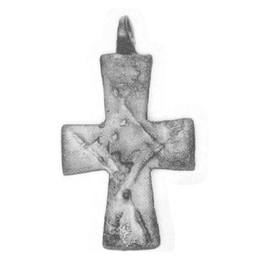

Catalog › CE-0036 · LOV1999-30
Cruce pectorală cu Hristos răstignit în tunică lungă
sec. X–XI (901–1100) · Sremska Mitrovica, Srem (Voivodina), Serbia · Muzeul Național Maghiar, Budapesta, inv. 1901.79.4
pectoral cross, bronz; c. X–XI (901–1100); found at Sremska Mitrovica, Srem (Voivodina), Serbia; kept at Muzeul Național Maghiar, Budapesta.



Identificare
- Categorie
- Cruce pectorală simplă
- Material
- Bronz
- Tehnică
- Turnare în relief
- Dimensiuni
- Î 48 × L 27 mm
Iconografie
- Descriere avers
- Pe fond adâncit, Hristos în relief plat, primitiv, în tunică lungă; ochi mari, rotunzi; brațele ridicate în sus; trunchiul abia recognoscibil.
- Revers
- Ornament geometric
- Descriere revers
- Pe spate, la întretăierea brațelor, un romb gravat cu linie dublă, ale cărui linii continuă pe brațele crucii; în mijloc, o cruce mică cu brațe egale.
Datare și atribuire
- Datare
- sec. X–XI (901–1100)
- Centru
- Balcani
Descoperire
- Localitate
- Sremska Mitrovica
- Regiune
- Srem (Voivodina)
- Țară
- Serbia
- Context
- Colecție (fără context)
- Coordonate
- 44.9686° N, 19.6084° E
- Precizia locului
- Doar localitatea
Păstrare și referințe
- Colecție
- Muzeul Național Maghiar, Budapesta
- Nr. inventar
- 1901.79.4
- Bibliografie
- Zs. Lovag, Mittelalterliche Bronzegegenstände des Ungarischen Nationalmuseums (Catalogi Musei Nationalis Hungarici, Series Archaeologica III), Budapest, 1999, p. 29, cat. nr. 30, reprodusă la Abb. 30 a-b (planșele, p. 135). Bibliografie citată în sursă: Bárány-Oberschall 1953, 236, Abb. 75.h; Lovag 1980, 366, Abb. 1/7.
- Figura
- Abb. 30 a-b
- Planșe
- Lovag 1999, planșele, p. 135
- Observații
- Datare după Lovag: sec. X–XI. X–XI. Origine provincial-bizantină (Balcani). Locul de descoperire este dat în sursă ca incert („angeblich Mitrovica, Jugoslawien”); Mitrovica este identificată cu Sremska Mitrovica (Sirmium), pe baza contextului achiziției (colecție maghiară, obiecte romane). Intrată în muzeu prin cumpărare, împreună cu mai multe obiecte de vârste diferite, în special din epoca romană. Un exemplar aproape identic provine de la Păcuiul lui Soare (P. Diaconu 1977, 131, Taf. 102.7). Coordonate: ale localității (aproximative), nu date în sursă.
Citare: Corpus Encolpiorum, CE-0036, Cruce pectorală cu Hristos răstignit în tunică lungă, --root/piese/LOV1999-30/ (accesat 2026-10-17).